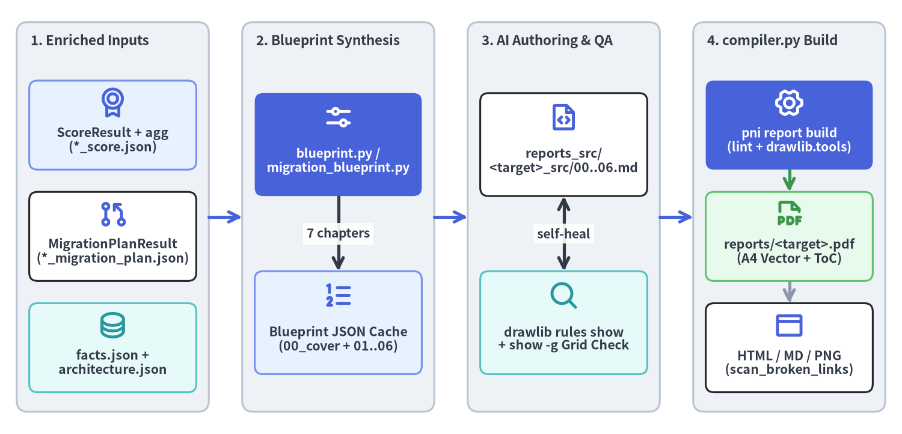
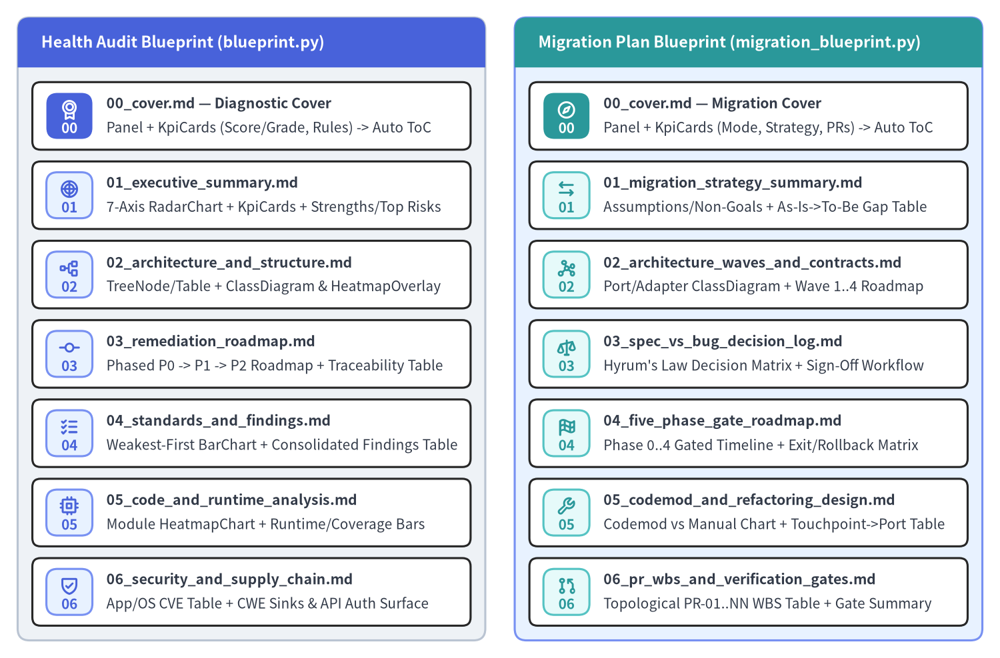

Drawlib ビジュアルレポーターと7章ブループリント
LLM にテーブルのソートやドキュメント構成の考案をゼロから任せるのではなく、pni501 はすべての診断メトリクスを決定論的にエンリッチ・重複排除・事前ソートしてキャッシュ済みの 7 章構成 ReportBlueprint（blueprint.py および migration_blueprint.py）へ変換したうえで、compiler.py から drawlib を通じてベクター A4 PDF（reports/<target>.pdf）およびマルチフォーマット成果物をコンパイルします。

Source Code
from drawlib.canvas import save, setup
from drawlib.diagrams.architecture import ArchitectureDiagram, Node, NodeGroup, PhosphorIcon
from drawlib.styles import Styles
setup(width=162, height=78, dpi=150)
diag = ArchitectureDiagram(
node_style=Styles.PrimaryBold,
node_text_style=Styles.DarkBold.patch(text_size=10.2),
edge_style=Styles.DarkBold,
edge_text_style=Styles.DarkBold.patch(text_size=10.0),
node_card_style=Styles.WhiteBordered.patch(shape_r=1.5),
)
g_inputs = diag.add(
NodeGroup(
title="1. Enriched Inputs",
width=34.5,
height=70.0,
style=Styles.Neutral.patch(shape_r=2.0),
text_style=Styles.DarkBold.patch(text_size=10.8, halign="left", valign="top"),
),
xy=(3.0, 4.0),
)
n_score = g_inputs.add(
Node(
"ScoreResult + agg\n(*_score.json)",
width=30.0,
height=16.0,
icon=PhosphorIcon.MEDAL,
icon_size=5.4,
card_style=Styles.PrimaryNeutral.patch(shape_r=1.5),
),
xy=(17.25, 51.5),
)
n_plan = g_inputs.add(
Node(
"MigrationPlanResult\n(*_migration_plan.json)",
width=30.0,
height=16.0,
icon=PhosphorIcon.GIT_PULL_REQUEST,
icon_size=5.4,
),
xy=(17.25, 31.5),
)
n_cache = g_inputs.add(
Node(
"facts.json +\narchitecture.json",
width=30.0,
height=16.0,
icon=PhosphorIcon.DATABASE,
icon_size=5.4,
style=Styles.SecondaryBold,
card_style=Styles.SecondaryNeutral.patch(shape_r=1.5),
),
xy=(17.25, 11.5),
)
g_bp = diag.add(
NodeGroup(
title="2. Blueprint Synthesis",
width=34.5,
height=70.0,
style=Styles.Neutral.patch(shape_r=2.0),
text_style=Styles.DarkBold.patch(text_size=10.8, halign="left", valign="top"),
),
xy=(43.5, 4.0),
)
n_bp_eng = g_bp.add(
Node(
"blueprint.py /\nmigration_blueprint.py",
width=30.0,
height=18.5,
icon=PhosphorIcon.SLIDERS_HORIZONTAL,
icon_size=5.6,
style=Styles.WhiteBold,
text_style=Styles.WhiteBold.patch(text_size=10.0),
card_style=Styles.PrimaryFlat.patch(shape_r=1.5),
),
xy=(17.25, 48.0),
)
n_bp_json = g_bp.add(
Node(
"Blueprint JSON Cache\n(00_cover + 01..06)",
width=30.0,
height=18.5,
icon=PhosphorIcon.LIST_NUMBERS,
icon_size=5.6,
card_style=Styles.PrimaryNeutral.patch(shape_r=1.5),
),
xy=(17.25, 16.0),
)
g_author = diag.add(
NodeGroup(
title="3. AI Authoring & QA",
width=34.5,
height=70.0,
style=Styles.Neutral.patch(shape_r=2.0),
text_style=Styles.DarkBold.patch(text_size=10.8, halign="left", valign="top"),
),
xy=(84.0, 4.0),
)
n_src = g_author.add(
Node(
"reports_src/\n<target>_src/00..06.md",
width=30.0,
height=18.5,
icon=PhosphorIcon.FILE_CODE,
icon_size=5.6,
),
xy=(17.25, 48.0),
)
n_qa = g_author.add(
Node(
"drawlib rules show\n+ show -g Grid Check",
width=30.0,
height=18.5,
icon=PhosphorIcon.MAGNIFYING_GLASS,
icon_size=5.6,
style=Styles.SecondaryBold,
card_style=Styles.SecondaryNeutral.patch(shape_r=1.5),
),
xy=(17.25, 16.0),
)
g_compile = diag.add(
NodeGroup(
title="4. compiler.py Build",
width=34.5,
height=70.0,
style=Styles.Neutral.patch(shape_r=2.0),
text_style=Styles.DarkBold.patch(text_size=10.8, halign="left", valign="top"),
),
xy=(124.5, 4.0),
)
n_comp = g_compile.add(
Node(
"pni report build\n(lint + drawlib.tools)",
width=30.0,
height=16.0,
icon=PhosphorIcon.GEAR_SIX,
icon_size=5.4,
style=Styles.WhiteBold,
text_style=Styles.WhiteBold.patch(text_size=10.0),
card_style=Styles.PrimaryFlat.patch(shape_r=1.5),
),
xy=(17.25, 51.5),
)
n_pdf = g_compile.add(
Node(
"reports/<target>.pdf\n(A4 Vector + ToC)",
width=30.0,
height=16.0,
icon=PhosphorIcon.FILE_PDF,
icon_size=5.4,
style=Styles.SuccessBold,
card_style=Styles.SuccessNeutral.patch(shape_r=1.5),
),
xy=(17.25, 31.5),
)
n_opt = g_compile.add(
Node(
"HTML / MD / PNG\n(scan_broken_links)",
width=30.0,
height=16.0,
icon=PhosphorIcon.BROWSER,
icon_size=5.4,
),
xy=(17.25, 11.5),
)
diag.connect(n_bp_eng, n_bp_json, label="7 chapters", routing="orthogonal")
diag.connect(n_qa, n_src, label="self-heal", arrow="<->", routing="orthogonal")
diag.connect(n_comp, n_pdf, routing="orthogonal", style=Styles.SuccessBold)
diag.connect(n_pdf, n_opt, routing="orthogonal", style=Styles.MutedBold)
diag.connect(g_inputs, g_bp, routing="orthogonal", style=Styles.PrimaryBold)
diag.connect(g_bp, g_author, routing="orthogonal", style=Styles.PrimaryBold)
diag.connect(g_author, g_compile, routing="orthogonal", style=Styles.PrimaryBold)
diag.draw(xy=(0.0, 0.0))
save()
1. なぜブループリント駆動の Illustration-as-Code なのか？
エグゼクティブ向け監査レポートや多段階マイグレーション仕様書を生成する際、ガイドなしの LLM ドキュメント生成では、ファインディングの抜け漏れ、テーブル順序の不整合、壊れやすいチャート描画コードが頻発します。pni501 は 決定論的なブループリント合成 と ビジュアル Markdown オーサリング を分離することで、これらの失敗モードを排除します。
- 事前計算された章別ペイロード（
blueprint.json/migration_blueprint.json）:write_drawlib_reportおよびwrite_migration_reportステップにおいて、src/pni/_reporter/blueprint.pyとsrc/pni/_reporter/migration_blueprint.pyがエンリッチ済みのScoreResultまたはMigrationPlanResultを 7 章構成のReportBlueprintへ変換し、事前ソート済みテーブル、チャート系列、KPI カード値、および章ごとの推奨 Drawlib コンポーネントを提供します。 - Git バージョン管理された
docアーキタイプ（reports_src/<target>_src/）: すべてのレポートは自己完結した Drawlibdocプロジェクト（drawlib.toml、styles.py、utils.py、および<lang>/00_cover.md .. 06_*.md）としてスキャフォールドされ、散文解説と宣言的 Python ダイアグラムをリポジトリとともに Git 管理できます。 - 自動プリフライトリンティングとマルチモーダル・グリッド検証:
drawlib.tools.build_pdf()を呼び出す前に、compiler.pyがlint_drawlib_chapters()を実行して複数系列チャートの凡例漏れや UML ヒートマップの等高線衝突を検出し、さらにエージェントが-g座標グリッド画像を視覚検査してテキスト切れをゼロに抑えます。
2. 2系統の7章構成 ReportBlueprint アーキテクチャ
健全性監査ワークフロー（category: audit）とモダナイゼーションワークフロー（category: migration）はいずれも、英語（en）または日本語（ja）にローカライズされた同一の 7ファイル線形 doc レイアウト（00_cover.md + 01..06.md） に標準化されています。Drawlib は 00_cover.md の直後にハイパーリンク付き目次（Table of Contents）を自動挿入します。

Source Code
from drawlib.canvas import save, setup
from drawlib.icons import phosphor
from drawlib.smartarts import CardList, Panel
from drawlib.styles import Styles
setup(width=170, height=112, dpi=150)
audit_panel = Panel(
"Health Audit Blueprint (blueprint.py)",
header_variant="filled",
header_height=8.5,
style=Styles.Neutral.patch(shape_r=2.0),
header_style=Styles.PrimaryFlat,
text_style=Styles.WhiteBold.patch(text_size=11.2),
)
audit_panel.draw(xy=(3.0, 3.0), width=79.5, height=106.0)
audit_cards = CardList(
style=Styles.WhiteBordered.patch(shape_r=1.4),
text_style=Styles.DarkBold.patch(text_size=10.2),
description_style=Styles.Dark.patch(text_size=10.0),
badge_shape="rounded_rect",
badge_style=Styles.PrimaryNeutral,
badge_text_style=Styles.PrimaryBold.patch(text_size=10.0),
icon_style=Styles.PrimaryBold,
direction="vertical",
spacing=2.0,
)
audit_cards.add(
"00_cover.md — Diagnostic Cover",
"Panel + KpiCards (Score/Grade, Rules) -> Auto ToC",
badge_text="00",
icon=phosphor.medal,
badge_style=Styles.PrimaryFlat,
badge_text_style=Styles.WhiteBold.patch(text_size=10.0),
icon_style=Styles.WhiteBold,
)
audit_cards.add(
"01_executive_summary.md",
"7-Axis RadarChart + KpiCards + Strengths/Top Risks",
badge_text="01",
icon=phosphor.chart_polar,
)
audit_cards.add(
"02_architecture_and_structure.md",
"TreeNode/Table + ClassDiagram & HeatmapOverlay",
badge_text="02",
icon=phosphor.tree_structure,
)
audit_cards.add(
"03_remediation_roadmap.md",
"Phased P0 -> P1 -> P2 Roadmap + Traceability Table",
badge_text="03",
icon=phosphor.git_commit,
)
audit_cards.add(
"04_standards_and_findings.md",
"Weakest-First BarChart + Consolidated Findings Table",
badge_text="04",
icon=phosphor.list_checks,
)
audit_cards.add(
"05_code_and_runtime_analysis.md",
"Module HeatmapChart + Runtime/Coverage Bars",
badge_text="05",
icon=phosphor.cpu,
)
audit_cards.add(
"06_security_and_supply_chain.md",
"App/OS CVE Table + CWE Sinks & API Auth Surface",
badge_text="06",
icon=phosphor.shield_check,
)
audit_cards.draw(xy=(5.5, 5.5), width=74.5, height=92.5)
mig_panel = Panel(
"Migration Plan Blueprint (migration_blueprint.py)",
header_variant="filled",
header_height=8.5,
style=Styles.PrimaryNeutral.patch(shape_r=2.0),
header_style=Styles.SecondaryFlat,
text_style=Styles.WhiteBold.patch(text_size=11.2),
)
mig_panel.draw(xy=(87.5, 3.0), width=79.5, height=106.0)
mig_cards = CardList(
style=Styles.WhiteBordered.patch(shape_r=1.4),
text_style=Styles.DarkBold.patch(text_size=10.2),
description_style=Styles.Dark.patch(text_size=10.0),
badge_shape="rounded_rect",
badge_style=Styles.SecondaryNeutral,
badge_text_style=Styles.SecondaryBold.patch(text_size=10.0),
icon_style=Styles.SecondaryBold,
direction="vertical",
spacing=2.0,
)
mig_cards.add(
"00_cover.md — Migration Cover",
"Panel + KpiCards (Mode, Strategy, PRs) -> Auto ToC",
badge_text="00",
icon=phosphor.compass,
badge_style=Styles.SecondaryFlat,
badge_text_style=Styles.WhiteBold.patch(text_size=10.0),
icon_style=Styles.WhiteBold,
)
mig_cards.add(
"01_migration_strategy_summary.md",
"Assumptions/Non-Goals + As-Is->To-Be Gap Table",
badge_text="01",
icon=phosphor.arrows_left_right,
)
mig_cards.add(
"02_architecture_waves_and_contracts.md",
"Port/Adapter ClassDiagram + Wave 1..4 Roadmap",
badge_text="02",
icon=phosphor.graph,
)
mig_cards.add(
"03_spec_vs_bug_decision_log.md",
"Hyrum's Law Decision Matrix + Sign-Off Workflow",
badge_text="03",
icon=phosphor.scales,
)
mig_cards.add(
"04_five_phase_gate_roadmap.md",
"Phase 0..4 Gated Timeline + Exit/Rollback Matrix",
badge_text="04",
icon=phosphor.flag_checkered,
)
mig_cards.add(
"05_codemod_and_refactoring_design.md",
"Codemod vs Manual Chart + Touchpoint->Port Table",
badge_text="05",
icon=phosphor.wrench,
)
mig_cards.add(
"06_pr_wbs_and_verification_gates.md",
"Topological PR-01..NN WBS Table + Gate Summary",
badge_text="06",
icon=phosphor.git_pull_request,
)
mig_cards.draw(xy=(90.0, 5.5), width=74.5, height=92.5)
save()
2.1 健全性監査 7章ブループリント（blueprint.py）
src/pni/_reporter/blueprint.py は、ScoreResult、WorkflowFactsBundle、および ArchitectureRecord を以下の 7 章へマッピングします。
| 章ファイル | 主なブループリントデータスライス | 標準 Drawlib ビジュアルコンポーネント |
|---|---|---|
00_cover.md |
overall_score、grade、workflow_id、evaluated_at、ルール準拠サマリ、ファインディング件数 |
フルブリード表紙 Panel + KpiCards（直後に PDF/HTML 目次を自動生成） |
01_executive_summary.md |
category_scores（7 軸）、category_rationales、strengths、主要 Critical/High リスク、opt_outs |
7軸 RadarChart + KpiCards + CardList / サマリテーブル |
02_architecture_and_structure.md |
architecture_record（layers_and_modules、flows_and_state）、internal_import_graph、module_hotspots |
TreeNode / Table + UML ClassDiagram と HeatmapOverlay(show_contour_lines=False) |
03_remediation_roadmap.md |
action_plan（P0 -> P1 -> P2 改善アクション、対象ファイル、工数、関連ルール ID） |
フェーズ別 Roadmap / ChevronProcess + 改善トレーサビリティ Table |
04_standards_and_findings.md |
audit_dimensions（弱点順）、rule_compliance、consolidated_findings（ファイル・行番号統合） |
弱点順の水平 BarChart + 位置統合ファインディング Table |
05_code_and_runtime_analysis.md |
modules（loc、複雑度、型注釈、docstring、risk_score）、runtime_facts（テスト、カバレッジ、スモーク） |
モジュール品質 HeatmapChart + 複数系列ランタイム・カバレッジ BarChart |
06_security_and_supply_chain.md |
security_facts（Trivy アプリ/OS CVE、秘密情報、IaC）、dangerous_sinks、api_endpoints、pentest_facts |
アプリ/OS CVE・CWE シンク内訳 + 動的 HTTP ペネトレーションテスト判定 Table |
2.2 マイグレーション実行計画 7章ブループリント（migration_blueprint.py）
完了した健全性監査実行を起点とするモダナイゼーションワークフロー（based_on 指定）では、src/pni/_reporter/migration_blueprint.py が MigrationPlanResult と MigrationFacts を並列の 7 章構成実行ブループリントへ合成します。
| 章ファイル | 主なブループリントデータスライス | 標準 Drawlib ビジュアルコンポーネント |
|---|---|---|
00_cover.md |
transformation_mode、migration_strategy、api_compatibility、bug_handling_policy、PR・フェーズ数 |
フルブリード移行計画表紙 Panel + KpiCards（直後に目次を自動生成） |
01_migration_strategy_summary.md |
confirmed_assumptions、non_goals、target_axes（As-Is -> To-Be スタック・リスク軸） |
移行戦略 CardList + As-Is -> To-Be ギャップ変換マトリクス Table |
02_architecture_waves_and_contracts.md |
target_architecture（target_layers、component_mappings）、refactoring_waves、cycle_cuts、implicit_contracts |
To-Be Port/Adapter ClassDiagram / ArchitectureDiagram + Wave 1..4 依存トポロジ |
03_spec_vs_bug_decision_log.md |
decision_log（DEC-01..NN）、spec_vs_bug_candidates（PO 承認を要する Hyrum の法則の挙動） |
意思決定ワークフロー図 + DEC-01..NN サインオフマトリクス Table |
04_five_phase_gate_roadmap.md |
phase_gates（Phase 0 特性テストから Phase 4 カットオーバーまでの完了条件・ロールバック手順） |
5フェーズゲート付き Roadmap / GanttChart + 完了・ロールバック基準 Table |
05_codemod_and_refactoring_design.md |
mechanical_codemods、manual_blockers、boundary_touchpoints（db、http、cache、auth ポート） |
自動 Codemod 対 手動リファクタリング BarChart + 境界タッチポイント変換 Table |
06_pr_wbs_and_verification_gates.md |
pr_wbs（PR-01..NN トポロジカル順 PR チケット、depends_on_prs、verification_cmd） |
PR 依存 DAG / フェーズ内訳 + PR-01..NN 作業分解構成（WBS）Table |
3. 非破壊スキャフォールディング・プリフライトリンター・グリッドQA
src/pni/_reporter/compiler.py と src/pni/_reporter/drawlib_guide.py は、スキャフォールディング、章オーサリング、およびマルチフォーマットビルドにわたって決定論的な品質ゲートを強制します。
3.1 非破壊 pni report init とオンデマンドルール参照
前半の AST 解析やルール解釈ステップでシステムプロンプトが肥大化するのを防ぐため、エージェントは reports_src/<target>_src/<lang>/*.md を執筆する直前に Drawlib ルールをオンデマンドで読み込み、-g 座標グリッドで各図を検証したうえで最終的な A4 ベクター PDF をコンパイルします。
# 1. Non-destructively scaffold reports_src/<target>_src/ (preserves existing *.md chapters)
pni report init <target> --src-dir reports_src --lang en --style google
# 2. Query Drawlib API & component rules on-demand (never guess constructor arguments)
uv run drawlib rules show overview
uv run drawlib rules show project-doc
uv run drawlib rules show api
# 3. Stage 2 visual grid verification (-g) before full PDF compilation
uv run drawlib show reports_src/<target>_src/en/01_executive_summary.md \
-s reports_src/<target>_src/styles.py -u reports_src/<target>_src/utils.py \
-g -o .drawlib/scratch/exec_summary_grid.png
# 4. Run preflight linter and compile reports/<target>.pdf (default A4 vector PDF + ToC)
pni report build <target> --src-dir reports_src --output-dir reports
3.2 プリフライトビジュアルリンター（lint_drawlib_chapters）とリンク検証
drawlib.tools を呼び出す前に、compiler.py は 4 つの自動検証ガードレールを実行します。
- 非破壊的な再スキャフォールディング（
scaffold_report_project）: 初回作成時、pni report initはスターターサンプル（00_cover.md、01_overview.md、02_design.md）を削除します。既存レポートディレクトリに対して再実行された場合は、--forceでdrawlib.toml、styles.py、utils.pyを更新する際にも執筆済みの<lang>/*.md章ファイルをすべて無傷で保持し、再監査時のgit diffをクリーンに保ちます。 - 複数系列チャートの凡例チェック:
lint_drawlib_chapters()がすべての```drawlibフェンスを走査し、.add_series(...)を 2 回以上呼び出すBarChartまたはLineChartが.draw_legend(...)を呼び出していることを検証します。 - UML ClassDiagram + HeatmapOverlay の等高線衝突ガード:
ClassDiagramとHeatmapOverlay(..., show_contour_lines=True)の併用に対してプリフライト警告（strict_preflight=True時はValueError）を発行します。show_contour_lines=Falseを指定することで、メソッドシグネチャに等高線が重なるのを防ぎつつ高リスククラスを滑らかなサーマルグラデーションで強調できます。 - 出力ファイル正規化とリンク切れスキャン（
_verify_links）:pni report buildは<target>_<default_lang>.pdfをreports/<target>.pdf（page_break=True、generate_index=True）へ正規化します。また-f html指定時には_verify_links()がdrawlib.tools.scan_broken_links()を実行し、リンク切れや画像アセット欠損があればフェイルクローズ（strict_links=True）で検出します。
上流の JSON スキーマや決定論的ホットスポット計算式の詳細は 7軸品質スコアリングモデル を、pni report の全 CLI オプションについては ルール拡張と CLI リファレンス を参照してください。